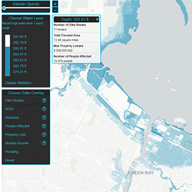
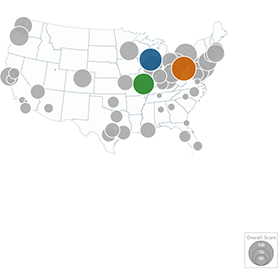
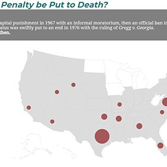
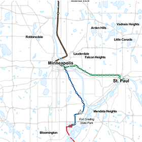
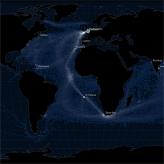

Green Bay Flood Viewer

Best Places to Live
Naomi Crump, Dan Schumacher, Alex Zarley

Campaign Contributions
Zihan Song, Shelley Witte, and Kristen Vincent

Capital Punishment
Natalee Desotell, Kai Brito, and Gaby Barrett

China Gender Issue
Duanyang Jing, Han Liu, Veronica Plum

Rapid Transit in the Cities
Christopher Morgan, Grace Vriezen, and Soren Walljasper

Wooden Ships
Meghan Kelly, Scott Farley, and Starr Moss